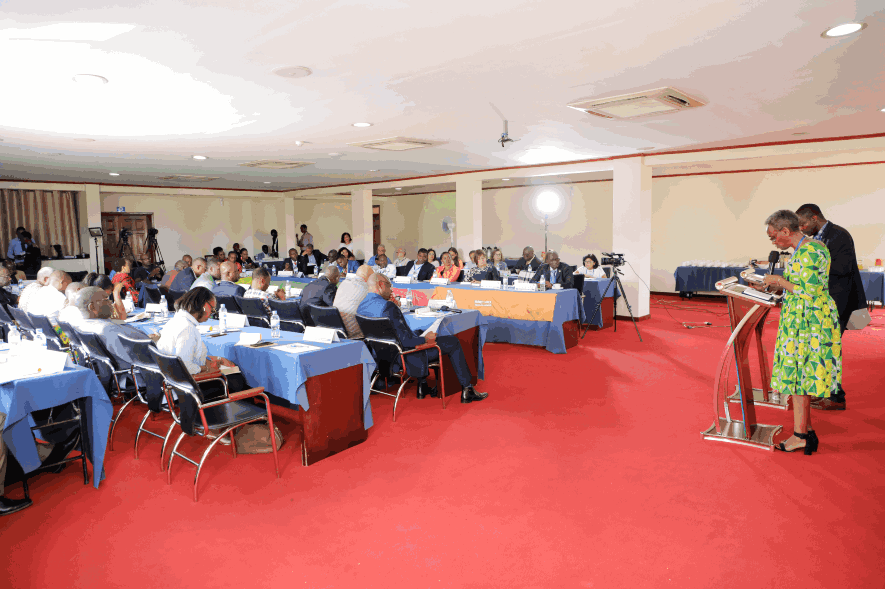

Harvest Africa Apostolic Network
Vision Bearer & Presiding Apostle
Apostle François Nkurunziza is the Vision Bearer and the Presiding Apostle of Harvest Africa Apostolic Network — a vision that primarily covers the African continent and the rest of the world.
He is the founder of MIRNE, a ministry born in the context of the aftermath of the 1994 Genocide against Tutsi in Rwanda, and the founder of the Community of Bethel Churches found in Rwanda and abroad.

In Ministry Together
Apostle Nkurunziza and his wife Bishop Thérèse Umigraneza have been serving the Lord together for over thirty years. Their partnership in the Gospel has been a cornerstone of everything MIRNE and the Community of Bethel Churches stands for. Together, they have four children and three grandchildren — a family built on faith, service, and love.
"As Christ is making us whole, God's Spirit works through us to bring wholeness to others."Get In Touch
A Life of Service
From the monastery to the nations — a remarkable walk of faith spanning more than four decades.
Early Life
Apostle Nkurunziza entered the Monastery in one of the Roman Catholic monastic orders, a formative period that shaped his deep spirituality and love for God's Word — which he left before his final vows.
1983
He experienced a dramatic conversion and was called to full-time ministry shortly after. He became one of the pioneers of the revival that swept through Burundi and other nations during the 1980s and 90s.
Training
Trained for ministry at Ecole Missionaire Francophone in France. He also holds a Bachelor of Arts in Law, combining a deep theological grounding with academic rigour.
Post-1994
Born in the aftermath of the 1994 Genocide against Tutsi in Rwanda, MIRNE became a vessel of restoration, reconciliation, and hope — the Gospel touching the deepest wounds of a nation.
Ongoing
As Presiding Apostle of HAAN, he provides a wide space for corporate anointing and converged efforts, skills, and competencies of diverse ministers from all walks of life across Africa and the world.
Teaching
Renowned as an orator especially on Biblical Prophecies, he has compiled the pertinent teaching series "The Signs of the Times" — equipping the Body of Christ for the days ahead.
Get In Touch
MIRNE is a member of the Rwanda Evangelical Alliance (AER). We'd love to hear from you.
As God's incarnate in Christ appealed to all to receive the Good News, our work and witness offers an invitation: Come, turn to God and be made whole.
+250 784 261 800 Send Us a Message